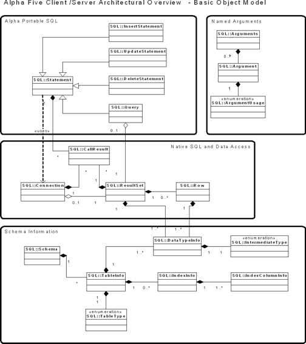

Objects in the SQL Namespace
Namespaces
With Alpha Anywhere classes of objects and enumerations can be grouped into namespaces. The namespace SQL has been added in order to group the new object classes that implement support for SQL databases. To dimension a variable for one of these objects, use the syntax SQL::. To help get you used to this syntax, all of the types are named referred to by their fully qualified names.
Basic
SQL::Connection - A session with a database server.
SQL::ResultSet - A collection of rows returned from the execution of a query.
SQL::ArgumentUsage - An enumerated type that defines the usage of an argument.
Advanced
SQL::Schema - A collection of SQL table definitions.
SQL::TableInfo - A fairly complete description of a SQL table, its columns, and its indexes.
SQL::DataTypeInfo - A single column in a table or result set.
SQL::IndexInfo - A description of an index on a SQL table.
SQL::IndexColumnInfo - A description of one of the columns in an index.
SQL::IntermediateType - An enumeration used to precisely define a column type independent of any specific database vendor.
Internal
SQL::ColumnValueSource - Describes whether data is specified by a column name or an expression.
SQL::List - An array of items, varying according to the application
SQL::ReferenceList - An array of items, varying according to the application
SQL::ReferentialUpdateRule - This is an enumerated type is used to describe desired behavior when an update or a delete occurs for a table that has references to it from one or more other tables.
SQL::Row - A single row from a result set.
SQL::TableType - Describes the type of table being used.
SQL::UpdateWhereCriteria - Specifies which columns to include in a WHERE clause.

See Also
Limitations
Desktop applications only.